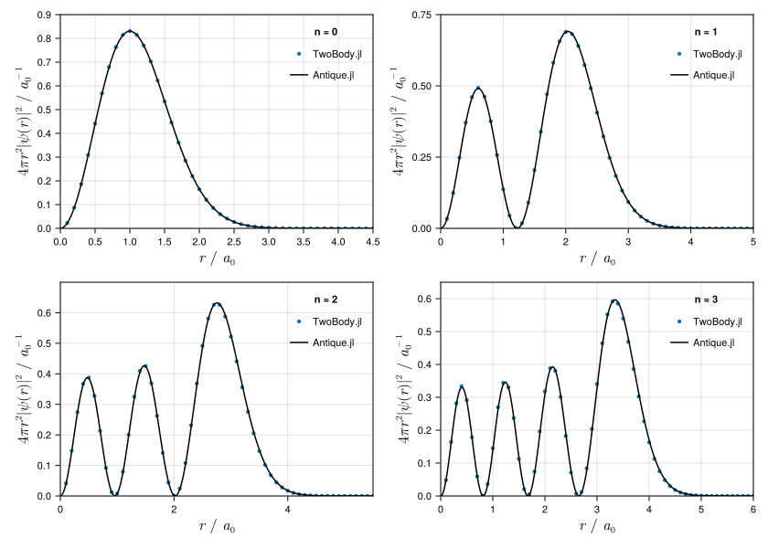

Finite Difference Method
This method solve the eigenvalue problem for the Hamiltonian discretized as a sparse matrix with finite difference approximation,
\[\pmb{H} \pmb{\psi} = E \pmb{\psi}.\]
The eigenvalue $E$ is an approximation of the exact energy and the eigenvector $\pmb{\psi}$ is a vector of the approximated values of the exact wavefunction $\psi(r)$ on points of the grid,
\[\pmb{\psi} = \left(\begin{array}{c} \psi(r_1) \\ \psi(r_2) \\ \psi(r_3) \\ \vdots \\ \end{array}\right).\]
A uniform grid spacing is used, $r_{i+1} = r_{i} + \Delta r$. See the API reference for the expression of the matrix $\pmb{H}$.
Usage
Run the following code before each use.
using TwoBodyDefine the Hamiltoninan. This is an example for the non-relativistic Hamiltonian of hydrogen atom in atomic units:
\[\hat{H} = - \frac{1}{2} \nabla^2 - \frac{1}{r}\]
H = Hamiltonian(
NonRelativisticKinetic(ℏ = 1 , m = 1),
CoulombPotential(coefficient = -1),
)Set the calculation options.
FDM = FiniteDifferenceMethod(
Δr = 0.1,
rₘₐₓ = 50.0,
l = 0,
direction = :c,
solver = :LinearAlgebra,
)Solve the eigenvalue problem. You should find reasonable approximations to the exact eigenvalues:
\[\begin{aligned} E_{n=1} &= -0.5,\\ E_{n=2} &= -0.125,\\ E_{n=3} &= -0.05555\cdots,\\ E_{n=4} &= -0.03125. \end{aligned}\]
By default the eigenvalues and the expectation values are displayed.
julia> solve(H, FDM)# method FiniteDifferenceMethod(Δr=0.1, rₘₐₓ=50.0, R=0.1:0.1:50.0, l=0, direction=c, solver=LinearAlgebra) # eigenvalue E₁ = -0.49875621120876734 E₂ = -0.12492197250388293 E₃ = -0.05554012469043975 E₄ = -0.03120072333117298 # others n norm, <ψₙ|ψₙ> = cₙ' * cₙ 1 1.0000000000000002 2 0.9999999999999997 3 1.0 4 0.9999999999999999 n error check, |<ψₙ|H|ψₙ> - E| = |cₙ' * H * cₙ - E| = 0 1 1.2501111257279263e-13 2 1.006972283335017e-13 3 1.1726036808212825e-13 4 9.801881528659351e-14 n expectation value of NonRelativisticKinetic(ħ=1, m=1) 1 3.2786923701708313 2 3.5307031141544387 3 3.5759997979303284 4 3.5934083915830506 n expectation value of CoulombPotential(coefficient=-1) 1 -3.7774485813797156 2 -3.6556250866584157 3 -3.631539922620877 4 -3.6246091149143225 (hamiltonian = Hamiltonian(NonRelativisticKinetic(ħ=1, m=1), CoulombPotential(coefficient=-1)), perturbation = Hamiltonian(), method = FiniteDifferenceMethod(Δr=0.1, rₘₐₓ=50.0, R=0.1:0.1:50.0, l=0, direction=c, solver=LinearAlgebra), nₘₐₓ = 4, H = sparse([1, 2, 1, 2, 3, 2, 3, 4, 3, 4 … 497, 498, 497, 498, 499, 498, 499, 500, 499, 500], [1, 1, 2, 2, 2, 3, 3, 3, 4, 4 … 497, 497, 498, 498, 498, 499, 499, 499, 500, 500], [89.99999999999999, -24.999999999999993, -100.0, 94.99999999999999, -33.33333333333333, -75.0, 96.66666666666666, -37.49999999999999, -66.66666666666666, 97.49999999999999 … 99.97987927565391, -49.89959839357429, -50.10060362173037, 99.97991967871485, -49.89979959919839, -50.1004016064257, 99.97995991983967, -49.89999999999999, -50.1002004008016, 99.97999999999999], 500, 500), J = sparse([1, 2, 3, 4, 5, 6, 7, 8, 9, 10 … 491, 492, 493, 494, 495, 496, 497, 498, 499, 500], [1, 2, 3, 4, 5, 6, 7, 8, 9, 10 … 491, 492, 493, 494, 495, 496, 497, 498, 499, 500], [0.010000000000000002, 0.04000000000000001, 0.09, 0.16000000000000003, 0.25, 0.36, 0.48999999999999994, 0.6400000000000001, 0.81, 1.0 … 2410.81, 2420.6400000000003, 2430.49, 2440.3599999999997, 2450.25, 2460.1600000000003, 2470.09, 2480.0399999999995, 2490.0099999999998, 2500.0], 500, 500), E = [-0.49875621120876734, -0.12492197250388293, -0.05554012469043975, -0.03120072333117298], C = [0.42543802418497695 -0.4251461161935358 0.4250919140636376 0.42517096061995674; 0.38501612033694493 -0.38316260548855374 0.3828188192363936 0.3827865209730681; … ; -3.1117294796655107e-16 2.778755334869982e-11 4.328032480039691e-7 -3.851240744620418e-5; 3.0672222532313215e-16 1.3851153379362121e-11 2.1589209275339216e-7 -1.9215539035970683e-5], ψ = [0.5093160129260595 -0.1803838291998678 0.09822040734934455 0.06432384275314983; 0.46092465688260226 -0.16257078531739505 0.08845291835112333 0.057911527982048155; … ; -3.725228028039728e-16 1.1789888431798156e-11 1.0000216403717652e-7 -5.826517495462732e-6; 3.6719459003848603e-16 5.876859720074794e-12 4.988335132285343e-8 -2.9071066132186216e-6])
Example of Hydrogen Atom
Analytical solutions are implemented in Antique.jl.
# solve
using TwoBody
H = Hamiltonian(NonRelativisticKinetic(1,1), CoulombPotential(-1))
FDM = FiniteDifferenceMethod()
res = solve(H, FDM, info=0, nₘₐₓ=4)
# benchmark
import Antique
HA = Antique.HydrogenAtom(Z=1, Eₕ=1.0, a₀=1.0, mₑ=1.0, ℏ=1.0)
# energy
using Printf
println("Total Energy Eₙ")
println("------------------------------")
println(" n numerical analytical")
println("------------------------------")
for n in 1:4
@printf("%2d %+.9f %+.9f\n", n, res.E[n], Antique.E(HA,n=n))
end
# wave function
using CairoMakie
fig = Figure(
size = (840,600),
fontsize = 11,
backgroundcolor = :transparent
)
for n in 1:4
axis = Axis(
fig[div(n-1,2)+1,rem(n-1,2)+1],
xlabel = L"$r~/~a_0$",
ylabel = L"$4\pi r^2|\psi(r)|^2~ /~{a_0}^{-1}$",
xlabelsize = 16.5,
ylabelsize = 16.5,
limits=(
0, [5, 15, 30, 50][n],
0, [0.6, 0.2, 0.11, 0.07][n],
)
)
X = res.method.R
Y = 4π * X .^2 .* res.ψ[:,n] .^ 2
scatter!(axis, X, Y, label="TwoBody.jl", markersize=6)
lines!(axis, 0..50, r -> 4π * r^2 * abs(Antique.ψ(HA,r,0,0,n=n))^2, label="Antique.jl", color=:black)
axislegend(axis, "n = $n", position=:rt, framevisible=false)
endTotal Energy Eₙ
------------------------------
n numerical analytical
------------------------------
1 -0.498756211 -0.500000000
2 -0.124921973 -0.125000000
3 -0.055540125 -0.055555556
4 -0.031200723 -0.031250000
Example of Spherical Oscillator
Analytical solutions are implemented in spherical oscillator.
# solve
using TwoBody
H = Hamiltonian(NonRelativisticKinetic(1,1), PowerLawPotential(coefficient=1/2,exponent=2))
FDM = FiniteDifferenceMethod(rₘₐₓ=10.0)
res = solve(H, FDM, info=0, nₘₐₓ=4)
# benchmark
import Antique
SO = Antique.SphericalOscillator(k=1.0, μ=1.0, ℏ=1.0)
# energy
using Printf
println("Total Energy Eₙ")
println("------------------------------")
println(" n numerical analytical")
println("------------------------------")
for n in 1:4
@printf("%2d %+.9f %+.9f\n", n-1, res.E[n], Antique.E(SO,n=n-1))
end
# wave function
using CairoMakie
fig = Figure(
size = (840,600),
fontsize = 11,
backgroundcolor = :transparent
)
for n in 1:4
axis = Axis(
fig[div(n-1,2)+1,rem(n-1,2)+1],
xlabel = L"$r~/~a_0$",
ylabel = L"$4\pi r^2|\psi(r)|^2~ /~{a_0}^{-1}$",
xlabelsize = 16.5,
ylabelsize = 16.5,
limits=(
0, [4.5, 5.0, 5.5, 6.0][n],
0, [0.90, 0.75, 0.70, 0.65][n],
)
)
X = res.method.R
Y = 4π * X .^2 .* res.ψ[:,n] .^ 2
scatter!(axis, X, Y, label="TwoBody.jl", markersize=6)
lines!(axis, 0..50, r -> 4π * r^2 * abs(Antique.ψ(SO,r,0,0,n=n-1))^2, label="Antique.jl", color=:black)
axislegend(axis, "n = $(n-1)", position=:rt, framevisible=false)
end
figTotal Energy Eₙ
------------------------------
n numerical analytical
------------------------------
0 +1.498435737 +1.500000000
1 +3.492169621 +3.500000000
2 +5.480870301 +5.500000000
3 +7.464518486 +7.500000000
API reference
TwoBody.FiniteDifferenceMethod — TypeFiniteDifferenceMethod(Δr=0.1, rₘₐₓ=50.0, R=Δr:Δr:rₘₐₓ, l=0, direction=:c, solver=:LinearAlgebra)
| Arguments | Default | Description |
|---|---|---|
Δr::Real | 0.1 | Radial grid spacing. A uniform grid spacing is used, $r_{i+1} = r_{i} + \Delta r$. |
rₘₐₓ::Real | 50.0 | The maximum value of the radial grid. This value is not directly used in the calculation, but it is used to determine the R. |
R::StepRangeLen | Δr:Δr:rₘₐₓ | Radial grid. The origin must be excluded from the grid to avoid divergence of the Coulomb potential and the centrifugal potential at the origin. |
l::Int | 0 | Angular momentum quantum number. This is a positive integer, $0 \leq l$. |
direction::Symbol | :c | The direction of the finite difference, :c for central, :f for forward, :b for backward. |
solver::Symbol | :LinearAlgebra | The solver for eigenvalue problem, :LinearAlgebra or :ArnoldiMethod. |
TwoBody.solve — Methodsolve(hamiltonian::Hamiltonian, method::FiniteDifferenceMethod; perturbation=Hamiltonian(), info=4, nₘₐₓ=4)
This method solve the eigenvalue problem for the Hamiltonian discretized as a sparse matrix with finite difference approximation,
\[\pmb{H} \pmb{\psi} = E \pmb{\psi}.\]
The eigenvalue $E$ is an approximation of the exact energy and the eigenvector $\pmb{\psi}$ is a vector of the approximated values of the exact wavefunction $\psi(r)$ on points of the grid,
\[\pmb{\psi} = \left(\begin{array}{c} \psi(r_1) \\ \psi(r_2) \\ \psi(r_3) \\ \vdots \\ \end{array}\right).\]
TwoBody.matrix — Methodmatrix(o::Hamiltonian, method::FiniteDifferenceMethod)
The matrix for the Hamiltonian is a sum of matrices for each term,
\[\pmb{H} = \sum_i \pmb{O}_i.\]
TwoBody.matrix — Methodmatrix(o::RestEnergy, method::FiniteDifferenceMethod)
The matrix for the rest energy $mc^2$ is a diagonal matrix,
\[mc^2 \left(\begin{array}{ccccccc} 1 & 0 & 0 & \ldots \\ 0 & 1 & 0 & \ldots \\ 0 & 0 & 1 & \ldots \\ \vdots & \vdots & \vdots & \ddots \\ \end{array}\right).\]
TwoBody.matrix — Methodmatrix(o::NonRelativisticKinetic, method::FiniteDifferenceMethod)
We use the shorthand notation $\psi'(r) = \frac{\mathrm{d}\psi}{\mathrm{d}r}(r)$ and $\psi''(r) = \frac{\mathrm{d}^{2}\psi}{\mathrm{d}r^{2}}(r)$. For the uniform grid spacing ($r_{i+1} = r_{i} + \Delta r$), the finite difference for the first derivative,
\[\frac{\mathrm{d}\psi}{\mathrm{d}r}(r) = \frac{\psi(r+\Delta r) - \psi(r-\Delta r)}{2\Delta r} + O(\Delta r^{2})\]
is written as
\[\left(\begin{array}{ccccc} \psi'(r_1) \\ \psi'(r_2) \\ \psi'(r_3) \\ \psi'(r_4) \\ \vdots \end{array}\right) \simeq \frac{1}{2\Delta r} \left(\begin{array}{ccccc} 0 & 1 & 0 & 0 &\ldots \\ -1 & 0 & 1 & 0 &\ldots \\ 0 & -1 & 0 & 1 &\ldots \\ 0 & 0 & -1 & 0 &\ldots \\ \vdots & \vdots & \vdots & \vdots & \ddots \\ \end{array}\right) \left(\begin{array}{ccccccc} \psi(r_1) \\ \psi(r_2) \\ \psi(r_3) \\ \psi(r_4) \\ \vdots \end{array}\right),\]
and the finite difference for the second derivative,
\[\frac{\mathrm{d}^{2}}{\mathrm{d}r^{2}}(r) = \frac{\psi(r+\Delta r) - 2f(r) + \psi(r-\Delta r)}{\Delta r^{2}} + O(\Delta r^{2}).\]
is written as
\[\left(\begin{array}{ccccc} \psi''(r_1) \\ \psi''(r_2) \\ \psi''(r_3) \\ \psi''(r_4) \\ \vdots \end{array}\right) \simeq \frac{1}{\Delta r^2} \left(\begin{array}{ccccccc} -2 & 1 & 0 & 0 & \ldots \\ 1 & -2 & 1 & 0 & \ldots \\ 0 & 1 & -2 & 1 & \ldots \\ 0 & 0 & 1 & -2 & \ldots \\ \vdots & \vdots & \vdots & \vdots & \ddots \end{array}\right) \left(\begin{array}{ccccccc} \psi(r_1) \\ \psi(r_2) \\ \psi(r_3) \\ \psi(r_4) \\ \vdots \end{array}\right).\]
Similarly, the matrix for the kinetic energy,
\[\hat{T} = -\frac{\hbar^2}{2\mu} \left[ \frac{\partial^2}{\partial r^2} + \frac{2}{r} \frac{\partial}{\partial r} - \frac{l(l+1)}{r^2} \right]\]
is written as
\[\pmb{T} = - \frac{\hbar^2}{2\mu} \left[ \frac{1}{{\Delta r}^2} \left(\begin{array}{ccccccc} -2 & 1 & 0 & \ldots \\ 1 & -2 & 1 & \ldots \\ 0 & 1 & -2 & \ldots \\ \vdots & \vdots & \vdots & \ddots \\ \end{array}\right) + \left(\begin{array}{ccccccc} 2/r_1 & 0 & 0 & \ldots \\ 0 & 2/r_2 & 0 & \ldots \\ 0 & 0 & 2/r_3 & \ldots \\ \vdots & \vdots & \vdots & \ddots \\ \end{array}\right) \frac{1}{\Delta r} \left(\begin{array}{ccccccc} 0 & 1 & 0 & \ldots \\ -1 & 0 & 1 & \ldots \\ 0 & -1 & 0 & \ldots \\ \vdots & \vdots & \vdots & \ddots \\ \end{array}\right) - l(l+1) \left(\begin{array}{ccccccc} 1/{r_1}^2 & 0 & 0 & \ldots \\ 0 & 1/{r_2}^2 & 0 & \ldots \\ 0 & 0 & 1/{r_3}^2 & \ldots \\ \vdots & \vdots & \vdots & \ddots \\ \end{array}\right) \right].\]
TwoBody.matrix — Methodmatrix(o::PotentialTerm, method::FiniteDifferenceMethod)
The matrix for the potential energy $V(r)$ is a diagonal matrix,
\[\pmb{V} = \left(\begin{array}{ccccccc} V(r_1) & 0 & 0 & \ldots \\ 0 & V(r_2) & 0 & \ldots \\ 0 & 0 & V(r_3) & \ldots \\ \vdots & \vdots & \vdots & \ddots \\ \end{array}\right).\]